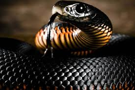

Serpiente Mamba Negra

Hábitat y estilo de vida:
La mamba negra (Dendroaspis polylepis) es una de las serpientes más venenosas y rápidas del mundo. Habita en las sabanas y bosques abiertos del África subsahariana. Se caracteriza por su color grisáceo y el interior de su boca negro, del cual recibe su nombre. Puede alcanzar velocidades de hasta 20 km/h y medir hasta 4.5 metros de longitud.
Es una serpiente altamente territorial y defensiva. Cuando se siente amenazada, levanta una parte de su cuerpo, abre la boca para mostrar su interior negro y emite un siseo fuerte antes de atacar. Su veneno neurotóxico puede causar la muerte en menos de 30 minutos si no se recibe un antídoto a tiempo. Aunque es temida, solo ataca cuando se siente acorralada, ya que prefiere huir al detectar peligro.
Características
- Velocidad: Es la serpiente más rápida del mundo, alcanzando hasta 20 km/h.
- Veneno: Su mordedura puede ser letal en menos de 30 minutos sin tratamiento.
- Tamaño: Puede crecer hasta 4.5 metros de largo.
- Comportamiento: Prefiere evitar conflictos, pero es extremadamente agresiva si se siente amenazada.
- Estado de conservación: No está en peligro de extinción, pero enfrenta amenazas por la destrucción de su hábitat.
Regresar a la página principal